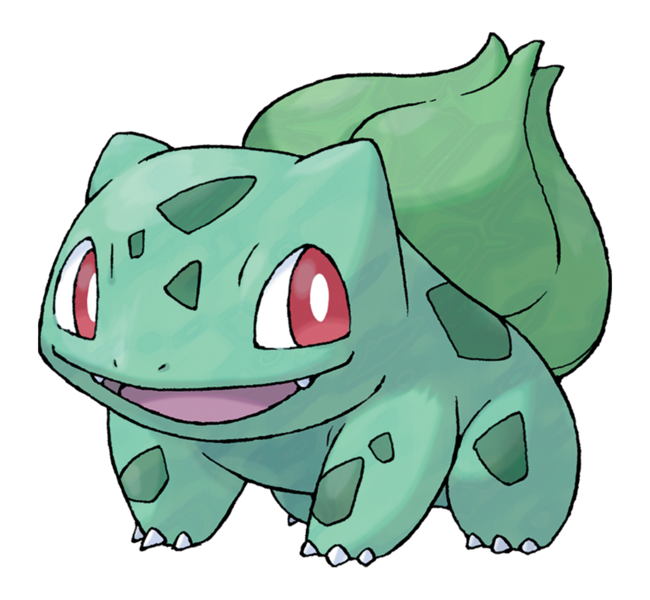

Bulbasaur #001
フシギダネ (Fushigidane)
- Su nombre proviene de la palabra inglesa bulb (bulbo) y de la palabra griega saur (reptil o lagarto).
- Su nombre japonés, Fushigidane, proviene de 不思議種 fushigidane (semilla extraña) y de un juego de palabras con 不思議だね fushigi da ne (es extraño, ¿verdad?).
- Su nombre francés, Bulbizarre, procede de las palabras francesas bulbe (bulbo) y bizarre (extraño).
- Su nombre alemán, Bisasam, procede de las palabras alemanas Bi (dos), Saurier (dinosaurio) y Samen (semilla).
- Su nombre coreano, 이상해씨 (Isanghaessi), procede de 이상해 isanghada (extraño) y 씨 ssi (semilla).
Bulbasaur es un Pokémon cuadrúpedo de color verde, posee
manchas de una tonalidad más oscura del mismo color con
distintas formas geométricas. Su cabeza representa cerca de un
tercio de su cuerpo. En su frente se ubican tres manchas que
pueden cambiar de posición, forma o lugar dependiendo del
ejemplar. Tiene como orejas muñones pequeños y puntiagudos.
Sus ojos son grandes y de color rojo. Sus patas son cortas y
posee tres garras en cada una. Este Pokémon tiene plantado un
bulbo en el lomo desde que nace, esta semilla crece y se
desarrolla a lo largo del ciclo de vida de Bulbasaur a medida
que suceden sus evoluciones. El bulbo absorbe y almacena la
energía solar que Bulbasaur necesita para hacer florecer el
bulbo de su lomo y evolucionar en Ivysaur. Dicen que cuanta
más luz consuma la semilla, más rápido crecerá y brotará, por
lo que es muy común ver a este Pokémon tumbado echándose una
siesta en lugares donde los rayos del sol lleguen a plenitud.
Por otro lado, gracias a los nutrientes que el bulbo almacena,
puede pasar varios días sin comer. Su cuerpo según a palabras
de Ken Sugimori y Junichi Masuda en una entrevista, está
basado en un anfibio (sapo o rana), al igual que toda su línea
evolutiva.3 El bulbo de Bulbasaur le ayuda a defenderse de los
enemigos, y desde él puede disparar ataques tales como rayo
solar y drenadoras entre otros movimientos. No es muy raro
encontrarlo en jardines y zonas cercanas a fuentes de agua. Se
los puede atraer con el aroma de las flores. Según el anime,
una vez al año, cuando estos Pokémon están listos para
evolucionar suelen reunirse en grandes cantidades en un Jardín
Misterioso mientras hacen un ritual a la luz de la luna junto
a un gran Venusaur.